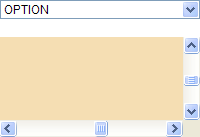

BW5014: Chrome 中弹出的 SELECT 元素下拉列表菜单在当前页或其内某个子框架页中通过脚本控制页面滚动条发生滚动时会消失
作者：陆远
标准参考
无。
问题描述
在 Chrome 中，若通过脚本控制当前页或其内某个子框架页的页面滚动条发生滚动，则弹出的 SELECT 元素下拉列表菜单此时会消失。
造成的影响
此问题可能导致页面中所有 SELECT 元素在 Chrome 中点击后无法正常显示下拉菜单，从而 SELECT 中各项均无法被点击。
受影响的浏览器
| Chrome |
|---|
问题分析
根据问题描述构建如下测试样例：scroll.html
<!DOCTYPE html>
<html>
<head>
</head>
<body>
<select style="width:200px; font:12px Arial;">
<option>OPTION</option>
</select>
<br /><br />
<iframe name="ifr" frameborder="0" style="width:200px; height:100px;"></iframe>
<script>
window.onload = function () {
var x = 0, y = 0, ifr = frames['ifr'];
ifr.document.write('<body style="background:wheat;"><div style="width:2000px;height:1000px;"></div></body>');
setInterval(function () {
(x >= 2000 && y >= 1000) && (x = 0, y = 0);
ifr.scroll(x+=20, y+=10);
}, 50);
}
</script>
</body>
</html>
页面中有一个 SELECT 元素及一个 IFRAME 元素，IFRAME 元素内的子框架页生成了页面滚动条，通过脚本调用 window.scroll()1 方法使页面滚动条发生滚动，此时点击 SELECT 元素以使其弹出下拉菜单。
这段代码在各浏览器中运行效果为：
| Chrome | IE6 IE7 IE8 Firefox Safari Opera |
|---|---|
|  |  |
可见，在 Chrome 中，若通过脚本控制 IFRAME2 元素内子框架页的页面滚动条发生滚动，则弹出的 SELECT 元素下拉列表菜单此时会消失。
注 1: window.scroll() 与 当前浏览器文档模式下有效的修改页面 scrollTop、scollLeft 均会触发此现象；
注 2: 不仅 IFRAME 元素内子框架页面的页面滚动条，SELECT 元素所在页面的页面滚动条通过脚本发生滚动后同样会出现此现象。
解决方案
除非放弃页面滚动条自动滚动的功能，否则目前没有很好的解决方案，此问题需要等待浏览器厂商修复。
参见
知识库
相关问题
测试环境
| 操作系统版本: | Windows 7 Ultimate build 7600 |
|---|---|
| 浏览器版本: |
IE6 IE7 IE8 Firefox 3.6.10 Chrome 7.0.544.0 dev Safari 5.0.2 Opera 10.62 |
| 测试页面: | scroll.html |
| 本文更新时间: | 2010-10-13 |
关键字
SELECT scroll scrollTop scrollLeft 滚动 IFRAME